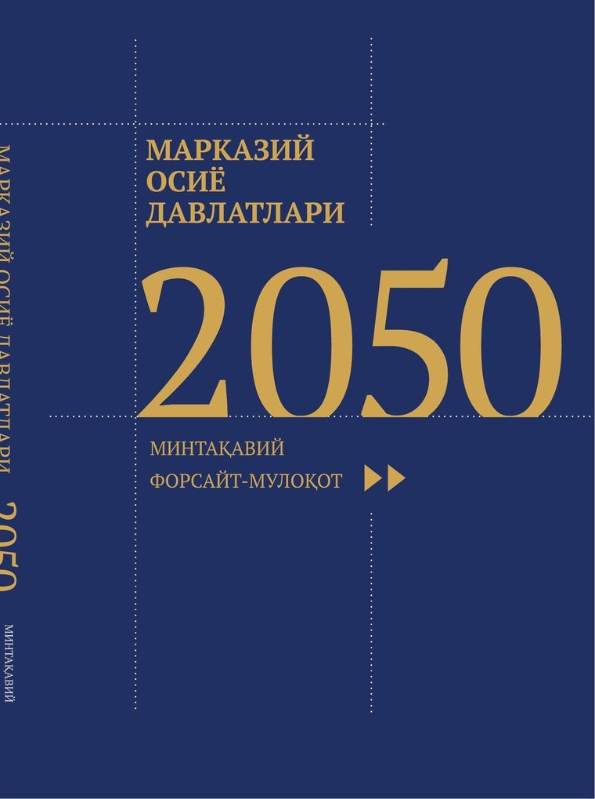
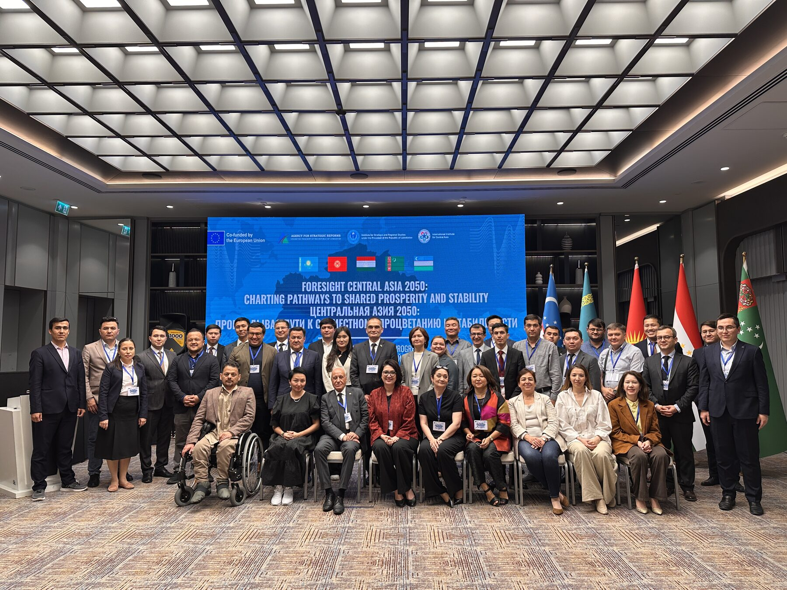

Минтақа тарихидаги биринчи форсайт-мулоқотининг натижаси — 2050 йилгача бўлган келажак манзаралари: иқлим, сув, энергетика, транспорт ва демография бўйича таҳлил ва тавсиялар.
The result of the region's first foresight dialogue — visions of the future through 2050 across climate, water, energy, transport, and demography.

Ушбу китоб — мустақил Марказий Осиё мамлакатлари тарихидаги биринчи минтақавий форсайт-мулоқотининг якуни. Беш давлатнинг таҳлилий марказлари вакиллари ва мустақил экспертлар биринчи марта бир стол атрофида йиғилиб, минтақанинг асосий муаммолари ва имкониятларини таҳлил қилиб, 2050 йилгача бўлган келажак манзараларини таклиф этишди.
Китоб тўртта устувор йўналиш атрофида қурилган — сув ва иқлим ўзгариши, энергетика, транспорт алоқалари ҳамда демография — ва уларга алоҳида боб бағишланган ёшлар овозини қўшади.
This book is the outcome of the first regional foresight dialogue in the history of independent Central Asia. Representatives of the five countries' leading analytical centers and independent experts gathered for the first time around one table to analyse the region's key challenges and opportunities and propose visions of its future through 2050.
The book is built around four priority tracks — water and climate change, energy, transport links, and demography — and adds a dedicated chapter giving voice to the region's youth.
«Форсайт – бу башорат қилиш эмас. Бу тўғри саволлар қўя билиш ва бугунги қадриятлар, мақсадлар ҳамда имкониятлардан келиб чиққан ҳолда келажак манзарасини шакллантириш санъатидир.» "Foresight is not prediction. It is the art of asking the right questions and shaping tomorrow's picture from today's values, goals, and choices." Китобдан, муқаддима From the book's preface
Минтақа бўйлаб хоҳиш билдирган ёшлардан 2050 йилгача ўз ҳудудлари келажагини эссе шаклида баён этиш сўралди. Уларнинг фуқаролик маданияти, ўзлик, соғлиқни сақлаш ва минтақавий интеграция ҳақидаги фикрлари китобнинг энг ўзига хос бобларидан бирини ташкил қилади.
Young people from across the region were invited to describe, in essay form, what their homelands could look like by 2050. Their reflections on civic culture, identity, health, and regional integration form one of the book's most distinctive chapters.
2025 йил 27–28 май кунлари Тошкентда минтақа таҳлилий марказлари ва мустақил экспертларини бирлаштирган Форсайт-семинар бўлиб ўтди. Тадбирни Стратегик ислоҳотлар агентлиги, ИСМИ ва МИЦА, шунингдек Қозоғистон Республикасининг тегишли агентлиги Европа Иттифоқи кўмагида ташкил этишди.
Семинар давомида минтақа мамлакатлари вакиллари 2050 йилгача бўлган ривожланиш манзаралари, сув-энергетика ва демография масалалари юзасидан фикр алмашишди. Тадбир суратлари ва иштирокчилар фикрлари алоҳида саҳифада тақдим этилган.
On 27–28 May 2025, Tashkent hosted a Foresight Seminar bringing together analytical centers and independent experts from across the region. The event was organized by the Agency for Strategic Reforms, ISMI and MICA, together with the relevant agency of the Republic of Kazakhstan, with support from the European Union.
Representatives from the region's countries exchanged views on development scenarios through 2050, water-energy issues, and demography. Photos from the event and participants' reflections are presented on a dedicated page.
Батафсил ва фотолавҳаларDetails & photos
217 бет · PDF · ўзбек ва инглиз тилидаги қисқа шарҳ.
217 pages · PDF · summary in Uzbek and English.
PDF юклаб олишDownload PDFКитоб бўйича фикр-мулоҳаза ва таклифларингизни кутиб қоламиз.
We welcome your comments and suggestions about the book.